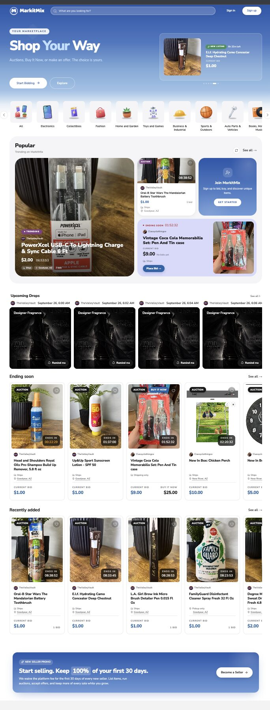
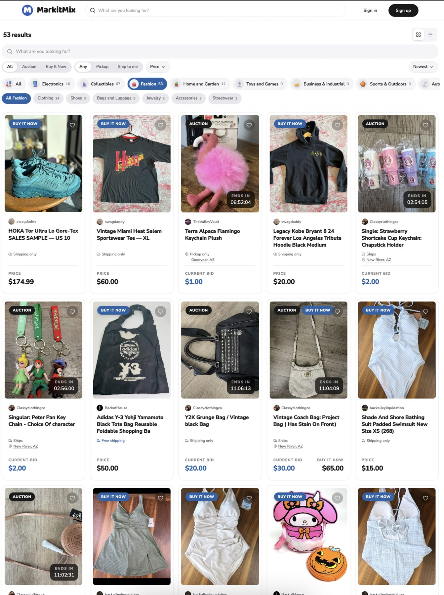
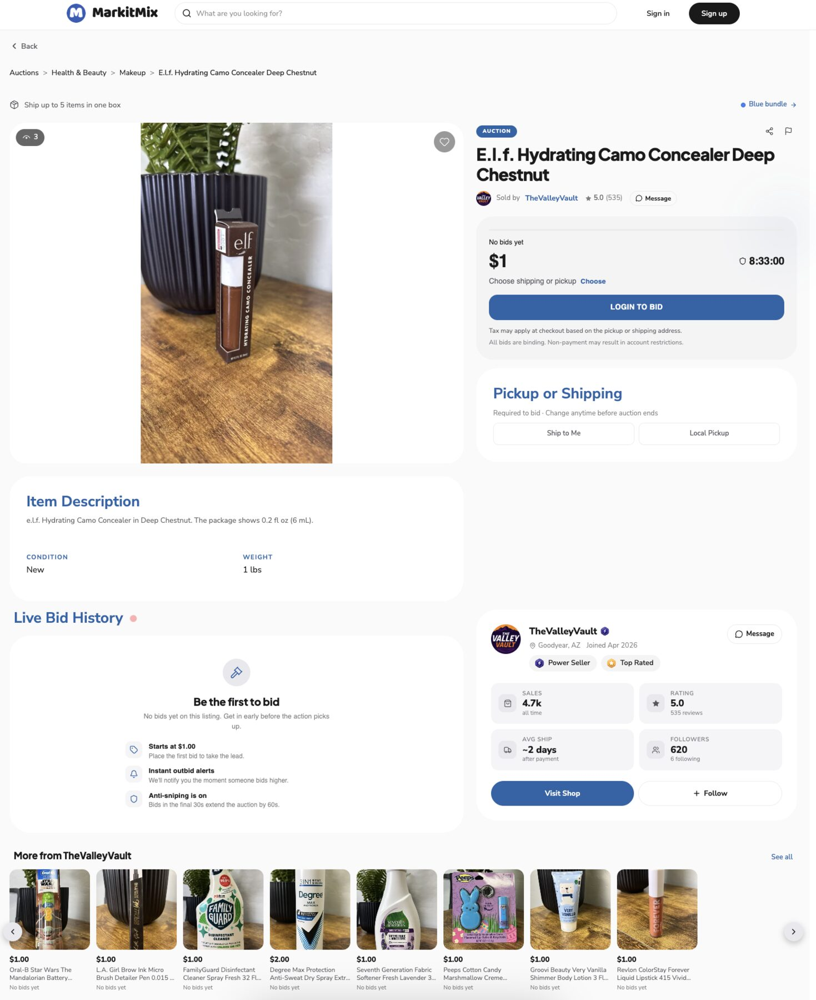
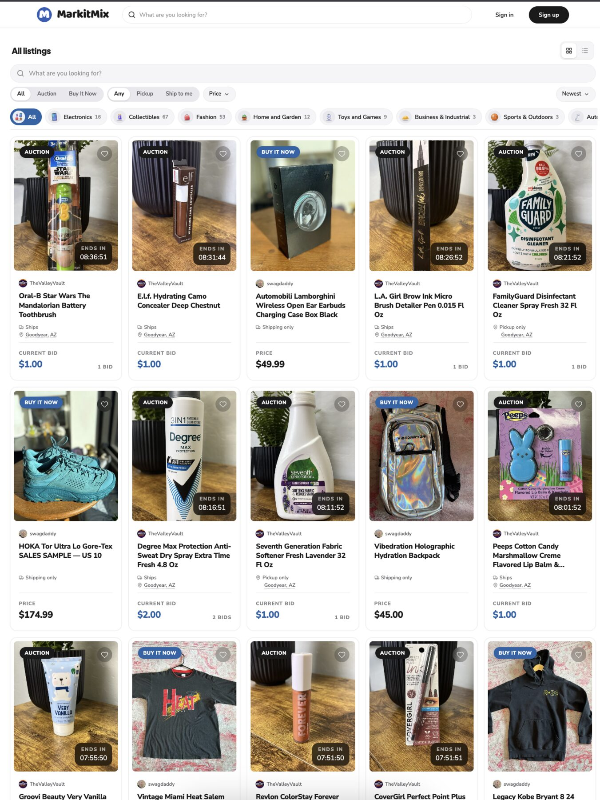
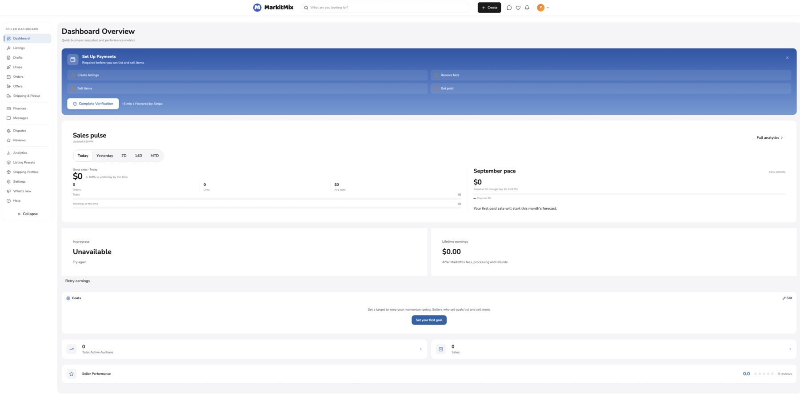
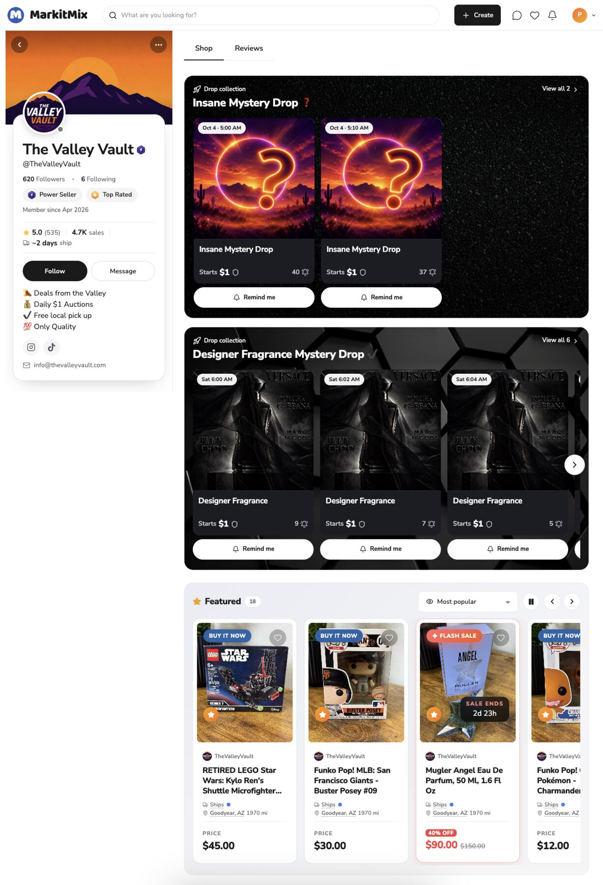

How I helped turn MarkitMix from a product concept into a live multi-vendor marketplace — owning the product journey across frontend, backend, payments, integrations, infrastructure and production.

The live MarkitMix marketplace — auctions, buy it now and offers in one place.
There was no backlog to work through and no design system to implement. There was a business that needed to exist: sellers who wanted somewhere to list and sell, buyers who wanted to browse, bid and buy, and an operator who needed to keep all of it running.
The real challenge was never "build some screens". It was to make a marketplace business work end to end — multiple vendors, their catalogues, customers, carts that mix sellers, auctions with real money attached, payments that have to reach the right party, and the day-to-day operational workflows behind all of it. Every screen had to sit on top of rules that made commercial sense first.
Before writing features, the product was broken into the three journeys that actually generate value. A marketplace only works when these three loops connect — a vendor listing has to become something a customer can find, buy and receive, and something an operator can see and support.
Find products across every vendor in one catalogue.
Buy at a fixed price or place a bid on a live listing.
One cart, even when the items come from different sellers.
One payment, correctly attributed behind the scenes.
Become an approved seller on the platform.
Create, price and maintain their own catalogue.
Put items up for bidding and follow them to close.
Receive orders and run their storefront day to day.
See what is happening across the whole platform.
Approve, review and support the sellers on board.
Step in when a listing or an order needs attention.
Keep marketplace operations under control.
The goal was never a set of isolated screens. Every step above hands something to the next one — a vendor action changes what a customer sees, a customer action creates work for a vendor, and the admin view has to reflect both at any moment.
Each part of the platform existed to solve a specific problem. Here is what that looked like in practice.
Every product, order and payout has to be traceable to the vendor it belongs to.
Vendor ownership was built into the data model from day one rather than bolted on later.
Vendors operate independently while customers experience a single marketplace.
Many sellers describe products differently, which makes browsing inconsistent.
A shared product structure with vendor-controlled listings, media and pricing.
One coherent catalogue that any approved vendor can contribute to.
Customers, vendors and admins need very different access to the same platform.
Role-based authentication and authorisation enforced on the server, not just in the UI.
Each role sees and can act on exactly what it should.
A single customer purchase can create obligations for several different businesses.
Orders were modelled so a purchase can be split and tracked per vendor.
Simple for the buyer, unambiguous for the seller and the operator.
Payments, storage, notifications and AI services all had to work together reliably.
A clean API layer so third-party services could be added and changed without rewrites.
New capabilities can be introduced without destabilising the marketplace.
Buyers and sellers show up on phones as often as on desktops.
The buying, selling and bidding flows were designed to work at any screen size.
The full marketplace is usable wherever the user happens to be.

One catalogue, many sellers — filtered by category, format, fulfilment and price.

Listing detail: the seller, their rating, bidding and shipping or local pickup.
This is where a marketplace stops behaving like a shop. A customer fills a single cart without caring who sells what — but the moment they pay, that one transaction has to be understood as several separate pieces of business, each belonging to a different vendor.
If a buyer adds three items from three different sellers, the platform needs to know exactly which product belongs to which vendor, create the right order records for each of them, take one payment from the customer, and then make sure the money is distributed to the correct parties — with the platform's own position accounted for.
Get it wrong and you do not get a bug report. You get an angry seller who was not paid, or a buyer charged for something nobody is fulfilling.
I designed and implemented the multi-vendor checkout and split-payment flow: cart items resolved back to their vendors, orders derived per vendor from a single purchase, and payment distribution handled as part of the order lifecycle instead of as a manual back-office chore. The flow was designed to operate with 50+ vendors on the platform.
Auctions were not a side feature. They gave vendors a second way to sell and gave the marketplace a reason for customers to come back — but they had to land in exactly the same order and payment machinery as a normal purchase.
The listing model supports buy-it-now items, multiple-item listings, smart bundle savings on shipment, pickup flows, scheduled drops, time-based auctions and flash sales in one consistent experience.

Auctions, buy-it-now, drops and flash sales running side by side, each with clear timing and fulfilment options.
A marketplace is not the website customers see. Most of the work of running one happens in the tools nobody outside the business ever looks at — and if those tools do not exist, the team ends up doing the platform's job manually.
Onboard, review and manage the sellers operating on the platform.
Keep the catalogue accurate across every vendor contributing to it.
Follow orders through their lifecycle and intervene when needed.
See platform activity as it happens instead of finding out later.
Control the settings and rules the marketplace runs on.
Turn recurring manual work into something the system handles.

The seller dashboard — listings, drops, orders, ledger, Stripe account connection, analytics and bulk inventory import.

Each vendor gets a real storefront — profile, reviews, scheduled drops and featured items.
AI was introduced into MarkitMix where it removed real friction from a workflow, using OpenAI and Claude. Every integration had to answer the same question first: what would a person otherwise have to do manually, and is a model genuinely better at it?
Sellers are good at sourcing products, not at writing product copy — so listings arrive thin and inconsistent.
Turning a few facts about an item into clear, consistent listing content is exactly what language models do well.
Built into the listing workflow itself, so the vendor gets help at the moment they are creating the item — with the vendor still in control of the final text.
When 50+ vendors describe products in their own words, browsing and searching becomes uneven for the customer.
Models can interpret messy, free-form product information and bring structure to it at scale.
Applied inside the catalogue flow so customers get a more coherent marketplace without vendors changing how they work.
The principle stayed the same throughout: AI is useful when it improves a real business workflow. Anything that could not be tied back to a workflow did not make it into the product.
A product that only runs on a laptop is not a product. Getting MarkitMix in front of real vendors and customers meant owning the path from source code to a running, reachable, healthy system.
I was involved in getting the system deployed and running as a real product — containerising the application, getting it onto AWS, making deployments repeatable, and dealing with the issues that only appear once something is live and being used rather than demoed.
For a founder, the practical meaning is simple: shipping was not treated as someone else's problem at the end of the project.
MarkitMix is live at markitmix.shop and shipping on iOS and Android — real sellers, real listings, real bids and the real operational work that comes with them.
A real seller operating on the platform today.
I worked as a full-stack/product engineer across the entire product lifecycle — from understanding what the business needed, through building it, to keeping it running once it was real.
The visible shop is the small part. The business rules connecting buyers, sellers and money are the product.
Decisions made casually early on become expensive to unwind once vendors and orders depend on them.
How money splits, when it moves and who is accountable shapes the architecture as much as the code does.
Without good admin and vendor tools, the team becomes the missing feature — manually.
The useful integrations were the ones that replaced tedious work people were already doing.
Real usage exposes the problems actually worth solving — the ones you could never have prioritised from a spec.
I help founders turn product ideas into production-ready software — from early product thinking and architecture through full-stack development, integrations, AI, deployment and ongoing improvement.